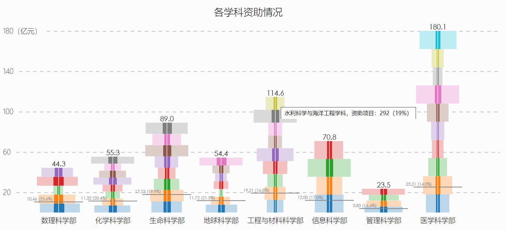
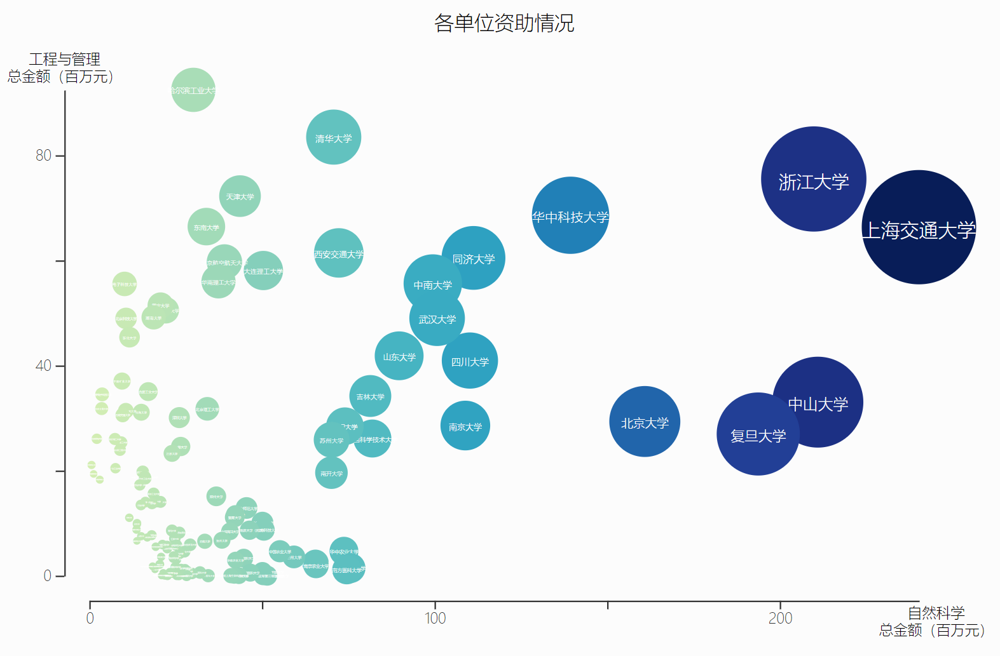
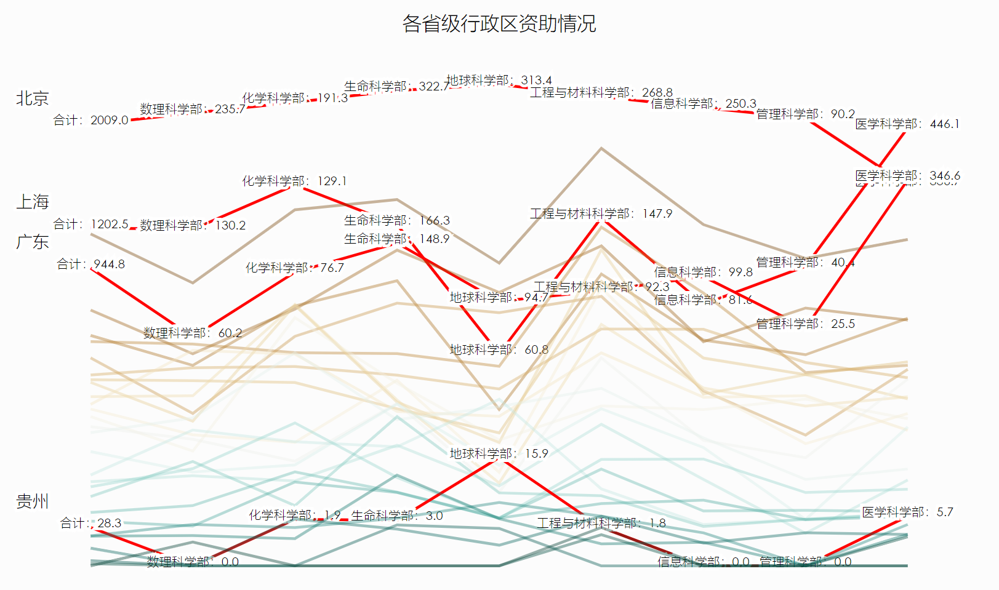

可视化页面：Visualization of the NSFC Funding 2018.
这次选择的三张表格都是高维数据，数据规模中等，都在几十到一百左右，但是属性有十几种。因此，选择需要进行可视化的属性就成了一个关键。选择属性需要考虑两个方面：
我们不难发现这组数据的一个明显特点：它对于所有的属性都用项目数和拨款金额两个指标进行了计算。显然，在数据间进行比较时，我们不会用一个数据的金额去比另一个数据的项目数。因此，当我们分析的重点放在数据间的比较时，这两个指标完全可以只取其中一个。但是，对于数据内的比较，显然我们可以考虑项目资助率会不会与拨款资助率有明显差异，因此两个维度都可以保留。 除此以外我们还可以发现，第一张表中明显具有很多冗余信息——各种比例。实际上，我们可以通过两部分的长度或者直方图等等自然看出比例关系来，故没有必要对这些比例单独做可视化。 关于数据的分析点，显然主要是在数据项之间进行某种比较，揭示它们的差异。比如，我们可以比较不同学科的资助情况，看看哪些学科是国家关注的重点；我们还可以比较不同单位的资助情况，间接反映出各单位的科研能力，以及它们的强势学科；我们还可以比较不同地区的资助情况，看看它们的教育实力，以及与经济发展的关系等等；我们甚至还可以分析项目主要负责人的年龄分布，看看每个学科的科研主力军是哪些年龄段的人。这些维度都是十分有价值的。这里，我们选取了前三种。
这张图中，我们想要比较全面的展示数据表一（2018年面上项目按申请与资助情况统计）的内容。但我们做出了一些合理的取舍：
关注不同学部间的比较，但只使用金额为指标
显然，不同学部间的比较有助于我们发现国家自然科学发展战略的侧重点。只用一个指标的理由上一节已经分析过了。
关注同一学部不同学科间的比较
很好理解，理由同上。
关注同一学部或者同一学科的申请情况与资助情况的比较，以及项目数和金额两个指标的比较
这里我们关注的其实是资助率。哪些学部（或哪些学科）的资助率高？这显然也代表了国家的战略方向以及科研事业的前景。同时，对于同一个学科，项目资助率和金额资助率也许会有一些不对称性，可以大概观察出科研所需的经费的不同。（不过根据结果看差别不大）
不关注不同学部的具体学科的比较
这一点比较特别。但我认为这个取舍是应该的。我们可能想要比较化学和地球科学哪个学部能获得更多的拨款，但是比较合成化学和大气科学这两个学科看起来就比较奇怪了；相反，比较大气科学和地质学显然是有道理的。
基于上面这些考虑，第一个很自然的想法就是堆叠柱状图。这样不仅可以比较各个学部的情况，也可以在学部内进行比较。而资助率可以直接用申请总额和资助总额两个柱子的长度之比表示。但是这样的设计仍有问题，因为竖向堆叠的柱子长度终究没有横向对齐的方便比较。于是，我最终采用了一种类似“年龄性别人口分布图”的方式，“年龄”换成各个学科，“性别”换成金额与项目数，并且每个横向的柱子都包括资助和未资助这两个透明度不同的部分；对每个学部都画一个这样的图，其高度与该学部的申请总额成比例（这里借鉴了堆叠图），然后用一条水平线代表资助的总额。这样的设计很好地满足了我的所有需要。
实际上，这张表（2018年国家自然科学基金面上项目资助金额超过2000万元的单位）的核心属性与表一是相同的。但是，数据有一百多项，再使用同样的方法显然不合适了。另外很重要的一点是，这张表的数据项不再是分类的，而是顺序的了。我们关注的分析点也由此出发：
这里我想起了“200 years, 200 contries, 4 minutes”这个设计，因此决定牺牲数据精确值来降维做一个散点图。我选择了自然科学学科（数理化生医和地球科学）的资助总额作为横轴，工程与管理学科的资助总额作为纵轴。为了不冗余，圆的大小换成了另外一个指标（总项目数）。如果把近十年的数据放在一起，我们就能很好地看出各科研院所实力的变化，很遗憾由于时间和编程基础问题没有办法实现这个想法。 这个设计的缺点也非常明显了，我们抛掉了很多原始数据。另外，圆的颜色这个维度也被我浪费了，实际上本可以用来表示别的属性，比如与地区联系起来。不过，因为我们的重点是比较各个单位，这还是可以容忍的。
这里我们可视化的表格（2018年面上项目资助情况（按地区统计））实际上与前面的表格还是类似的，属性相同，而且也是有序的。为了更好利用不同表现形式的长处，这里我们换成了平行坐标方式，这也是因为数据项个数（31）和属性数（9）都恰好比较适合用平行坐标来表示。另外，根据实验发现，线性尺度画出的图会造成北京一枝独秀其他省蜷缩一角的情况，于是我们尝试后换成了平方根尺度。其次，考虑到我们关注的重点是地区差异，极端值显然比中间值更值得关注，因此我们选取了分歧式的颜色谱。 平行坐标的优缺点都很明显。它全面地展示了所有数据，可以直观地比较任意两个省的任意属性，也可以直观的看出各个省的强项和弱项。但缺点是很容易乱。因此我们设计了交互，允许刷选显示具体数值，这样就保证了呈现的简洁和数据的完整。

关于作品描述，在页面中已经包含，这里直接引用如下：
The figure below illustrates the allocation of the funding across different academic departments (each represented by a vertical stacked "bar") and disciplines (each represented by a horizontal stacked bar).
- For each department, the number at the top indicates the total amount of money (in units of 100 million RMB yuan) that is applied for, while the horizontal grey line indicates the allocated part.
- For each discipline, two stacked bar chart (on the left and right side of a black vertical line) indicates the amount of money and project that is applied for, respectively. Likewise, the area in deep color represents the allocated part. Move the mouse over the bars to inspect the details.
从展示结果我们可以明显看到几点：

The figure below illustrates the allocation of the funding across different academic institutes (each represented by a circle).
- The x-value of a circle represents the total amount of funding (in units of 1 million RMB yuan, same below) received by an institute in the field of Mathematics and Physics, Chemistry, Biology, Medicine, and Earth Science.
- The y-value represents the total amount of funding received in the field of Engineering and Material Science, Information Science, and Management.
- The radius of a circle represents the total amount of projects accepted. Move the mouse over the bars to inspect the details.
我们可以看到，北大清华在这份榜单中竟然处于第二梯队，确实十分有趣。另外也可以明显地感受到，中国大学的科研实力实在差异太大。这里仅仅展示了总资助金额前120位左右的数据，但第一名和最后一名还是能相差几十上百倍，令人唏嘘。
这是刷选了几个省份的结果：

The parallel coordinate plot below illustrates the funding received in different regions of mainland China. By default, the y-axes are scaled by square root.
This figure is interactive:
- Click on a path to select a region and inspect its details.
- You can select multiple regions to compare.
- Click on the paths again to resume the original figure.
要注意的是，这里我们采取的是平方根尺度，如果采用线性尺度，省份之间的差异会更加夸张。可以看到，北京一枝独秀，上海、江苏和广东实力也不群。也许这与GDP总额会有着密切的关联。
要过ddl了，感想就私信说吧……